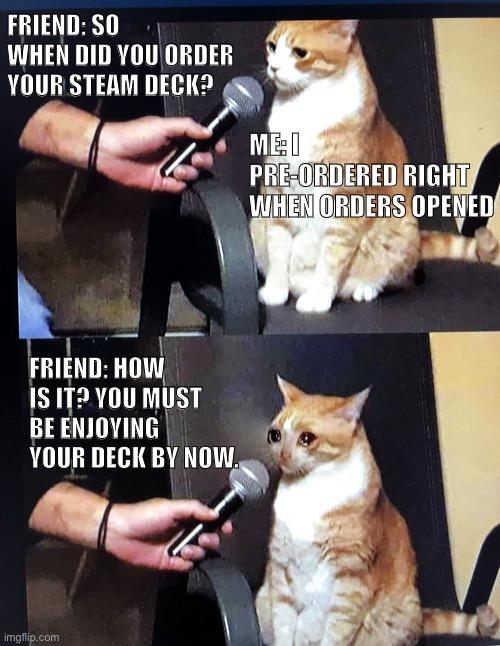

Photo by Rylan Bassett
Since the start of the COVID-19 pandemic, global supply chains have been consistently disrupted by outbreaks, regulations and quarantines. The gaming world has been impacted through its relationship to the semiconductor industry.
The hardware side of the gaming industry is seeing order delays because consumer electronics require high-end semiconductors and supply is not yet meeting the demand spurred by the world staying home. While use rates have risen on Steam, a popular PC gaming client, companies are struggling to fill orders for new consoles and handhelds without semiconductors to put in their products.
An independent database of Steam usage, SteamDB, collects concurrent user numbers several times a month and provides the dataset on their website. According to this data, use rates started to grow at a faster pace immediately following March 2020. There were more users on Steam and in-game while the pandemic was beginning compared to the months before COVID-19 dominated news cycles.
According to University of Maryland business school professor Suresh Acharya, the semiconductor supply chain has for many years been focused on efficiency over resilience.
Efficient supply chains with single, highly specialized suppliers, make sense to companies when all of the moving parts are moving together. The pandemic forced many of those parts to a screeching halt, which resulted in collapse in supply chains that could not adapt to the changes. The semiconductor industry is especially slow to adapt due to the high upfront investment needed to create new manufacturing plants, or foundries.
“Companies had started to rely just heavily excessively exclusively on single suppliers because they're the best, they know what to do…” Acharya said. “But what happens when that one supplier goes offline because of COVID – because of whatever? Now, the whole world comes crumbling down.”
Acharya said the semiconductor industry relies on foundries, most of which are in Taiwan, for assembly while most of the design of semiconductors is done by US companies like Nvidia and Qualcomm. According to a 2020 report by the Congressional Research Service, over 60 percent of revenue from fabless firms, companies that design but don’t fabricate semiconductors, are in the US. In contrast, nearly three quarters of the revenue from foundries is in Taiwan.
Acharya described the origin of this semiconductor shortage, noting that discrepancies between supply and demand are not uncommon in the industry. He said that the beginning of the COVID-19 pandemic caused a decrease in demand for consumer vehicles. So automakers stopped ordering semiconductors from the foundries in Taiwan, since they were producing far less. Fewer people driving means fewer cars, and fewer cars need fewer semiconductors.
But the semiconductor foundries were left with the capacity to manufacture semiconductors, and that capacity was soon filled by the electronics industry. According to Acharya, foundries adapted their processes to create higher-end semiconductors for use in computers and game consoles. These components are more complex than those used in most cars, so they are more expensive and make more money for the foundries.
Now that pandemic restrictions have loosened, automakers want to ramp up their production, but foundries are incentivized to alot their capacity to the complex computer components.
Acharya also said that the foundries are in no rush to fill the orders they do have for the consumer electronics industry. There are very few manufacturers of quality semiconductors due to the highly efficient and vulnerable supply chain, so the manufacturers have a captive demand.
So computer and game companies are willing to wait for semiconductors just like game consumers are willing to wait for consoles and game releases.
As of May 11, 2022, ordering a Steam Deck from Valve would get a unit to the customer sometime after October, according to the Steam website.
The Steam Deck, a handheld gaming device from Valve, released Feb. 25. It allows users to play mobile or connect to a monitor, similar to the Nintendo Switch.
One Reddit user, u/Fammy, took it upon themselves to build a Reddit bot to tell people how close they are to receiving their Steam Decks. To call the bot, which only works in the original post and private messages after being rate limited by Reddit, users feed it the model they ordered, their region and when they placed their order relative to pre-release opening. The bot then spits out a percentage representing how close the user is to getting their device.
Customers have been voicing their displeasure on social media as they wait months for their pre-ordered units. Reddit user u/itsjustausername11 posted a meme about the long wait, featuring a very sad cat.
